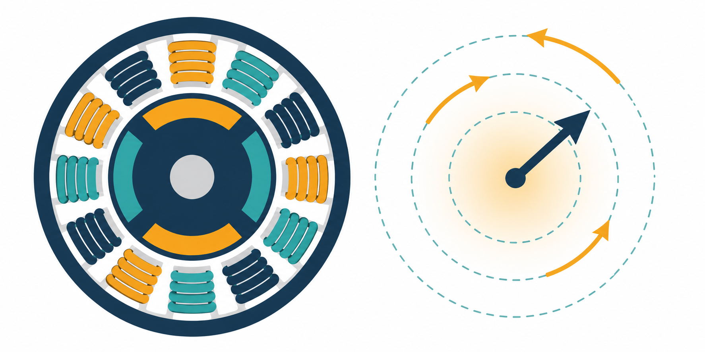

CURRENT RESEARCH
Dual-Vector Predictive Current Control for PMSM Drives
School of Transportation and Electrical Engineering
Dalian University of Science and Technology
Ongoing research

Research direction
This ongoing research explores predictive current control for permanent magnet synchronous motor drives.